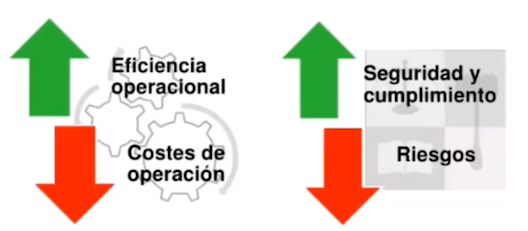
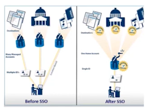

5. Sistemas de Single Sign On SSO
1. Introducción
El “Inicio de Sesión Único o Unificado” (Single Sign-On, SSO) es un sistema de autenticación de sesión único que permite al usuario acceder a múltiples recursos y aplicaciones a través de un único Login.
Este sistema permite acceder a más de un servicio completando, una única vez, todos los datos personales. Por ejemplo, cuando nos registramos en un sitio web determinado con la cuenta de Google o Facebook, de esta manera, se permite al usuario identificarse una sola vez y mantener la sesión abierta para el resto de aplicaciones.
Este sistema se usa en empresas, donde las aplicaciones las gestionan equipos de IT internos. El SSO es un sistema importante para la gestión de identidad y soluciones de control de acceso dado que la verificación de la identidad del usuario es muy importante para saber qué permisos tendrá al acceder al sistema.
El objetivo de los SSO es realizar una acceso rápido y seguro a los sistemas y aplicaciones.
Los SSO aumentan la efectividad operacional y la seguridad disminuyendo costes de operación y riesgos asociados.

2. Funcionamiento del inicio de sesión único.
En el primer acceso, la aplicación ofrece al usuario la posibilidad de completar una autenticación que incluye por un correo electrónico, nombre de usuario y contraseña. Cuando se completa correctamente, la aplicación tiene acceso a algunos de los datos del usuario sin tener que registrarse de nuevo.

3. Seguridad de Single Sign-On
Este método conlleva grandes ventajas para la seguridad interna de las empresas dado que si los empleados se registran una sola vez, se evitaran los errores típicos de marcación de contraseñas que a menudo contribuyen a ataques cibernéticos. Además, como los datos de acceso solo se introducen en una única interfaz, se reduce la vulnerabilidad frente a los ataques de tipo phishing y man-in-the-browser.
Para aumentar la seguridad y minimizar el riesgo de acceso malintencionado, las empresas también pueden utilizar la autenticación de dos factores (2FA) o la autenticación de múltiples factores (MFA).
4. Ventajas y desventajas de SSO
Como se ha comentado anteriormente, Single Sign-On gestiona a todos los usuarios desde un punto de autenticación central, garantizando la máxima seguridad interna.
Ventajas del inicio de sesión único:
- Mayor eficiencia y aumento de la productividad: reduce el número de contraseñas lo que facilita la vida de los usuarios y reduce la fatiga asociada a ella.
- Mejora la adaptación y el acceso de los usuarios.
- Seguridad y control digital: Con una única autenticación, es más fácil tener control de acceso y garantizar la protección de los datos. Los datos ya no se almacenan y administran externamente.
- Las contraseñas son más seguras.
- Autenticación de múltiple factor, por ejemplo, el usuario, además de ingresar su nombre de usuario y contraseña, también puede autenticarse con la huella dactilar u otro sistema de identificación.
5. Tipos de autenticación de inicio de sesión único
Inicio de sesión único empresarial (E-SSO). Este tipo de sistema funciona con una autenticación primaria, interceptando las solicitudes de inicio de sesión cuando las aplicaciones secundarias lo requieran para completar los campos de usuario y contraseña. El sistema E-SSO permite la interacción con otros sistemas que pueden desactivar la pantalla de inicio de sesión.
Inicio de sesión único web (Web-SSO). Este tipo de aplicación solo funciona con aplicaciones a las que se puede acceder a través de la web y su finalidad es autenticar a un usuario en varias aplicaciones sin tener que volver a identificarse.
Identidad federada. Este tipo de SSO implica la gestión de identidad que utiliza estándares para permitir que las aplicaciones identifiquen a los clientes sin la necesidad de autenticarse.
Open ID. Open ID es un proceso SSO descentralizado en el que la identidad del usuario se almacena en una URL que cualquier servidor puede identificar.
SSO social. Google, Linkedin, Twitter y Facebook ofrecen servicios de SSO populares que permiten al usuario final ingresar a una aplicación de terceros con sus credenciales de redes sociales. Aunque el inicio de sesión único social es una comodidad para los usuarios, puede presentar riesgos de seguridad.
6. Ejemplos
Algunos ejemplos son un sistema ERP, una aplicación de e-mails, un sistema de gestión documental y el software de recursos humanos. La cantidad de contraseñas que el empleado debe recordar es muy grande. Por lo que, se le solicita a menudo al servicio TIC tanto la contraseña como la recuperación de la cuenta.
Ejemplos prácticos:
- [Utilizar single sign-on para iniciar sesión]
- [Servicio de Informática de la universidad de Sevilla]
- [Microfocus]
- [SSO en Active Directory]
- [Soluciones de Single Sign On (SSO) - INCIBE]
7. Referencias
Obra publicada con Licencia Creative Commons Reconocimiento No comercial Compartir igual 4.0